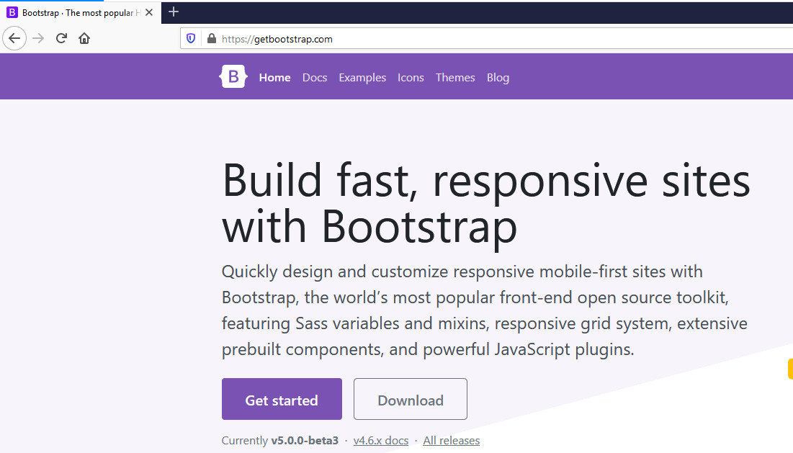
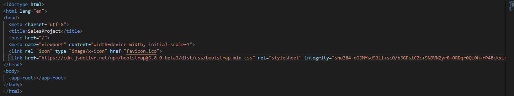
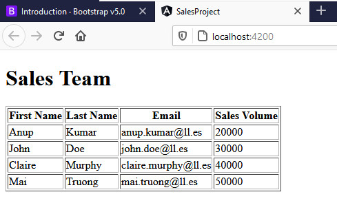
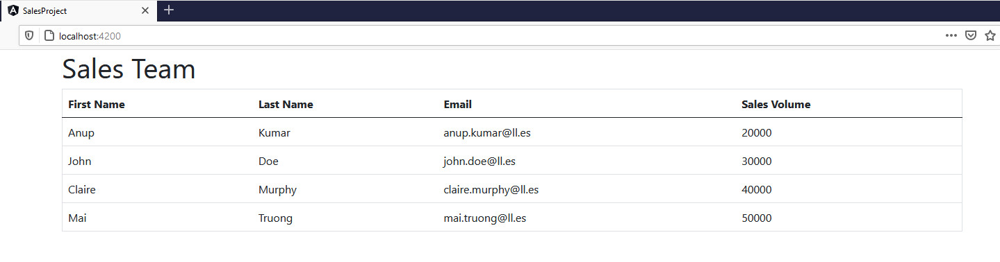

En primer lugar accedemos a la página web de Bootstrap: Bootstrap Y pulsamos en "Get started":  Añadimos el estilo en el head del index.html, antes de cualquier otro estilo y como indican en la página de Bootstrap:
<link href="https://cdn.jsdelivr.net/npm/bootstrap@5.0.0-beta3/dist/css/bootstrap.min.css" rel="stylesheet" integrity="sha384-eOJMYsd53ii+scO/bJGFsiCZc+5NDVN2yr8+0RDqr0Ql0h+rP48ckxlpbzKgwra6" crossorigin="anonymous">
 Comprobamos como se ve sin añadir ninguna clase de Bootstrap:  Y si le añadimos algún estilo: 